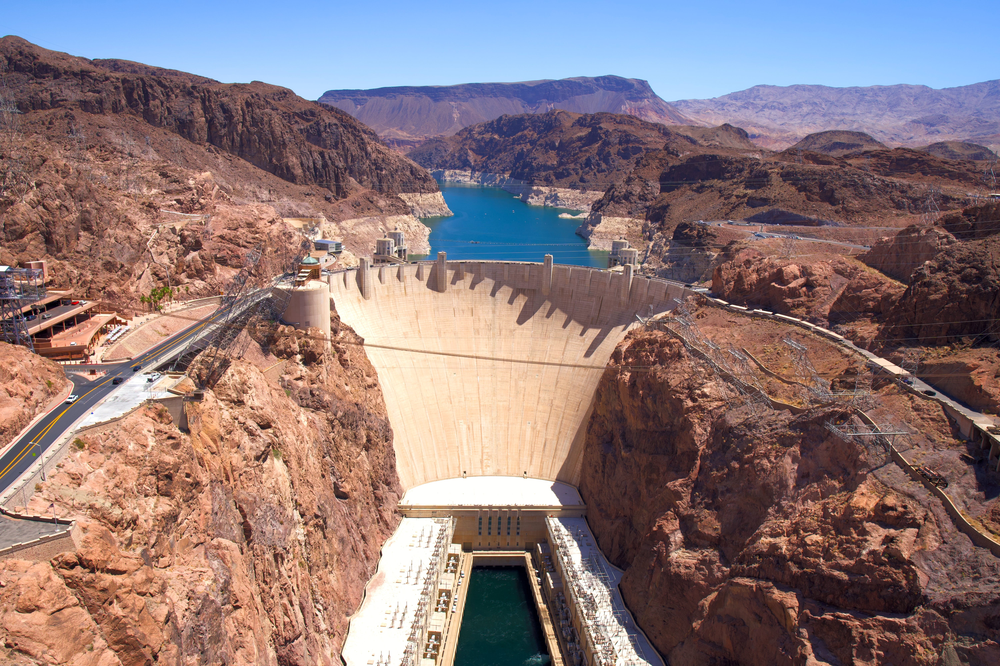
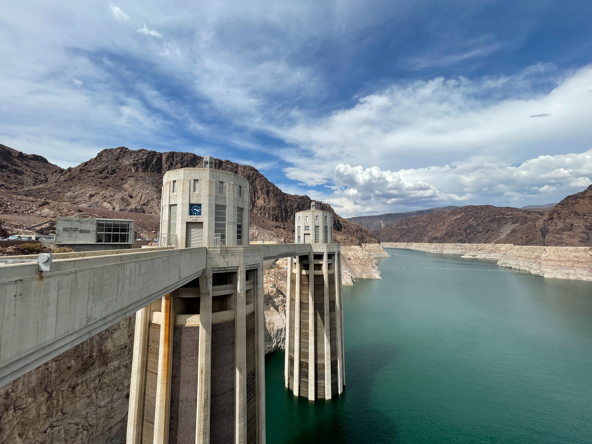
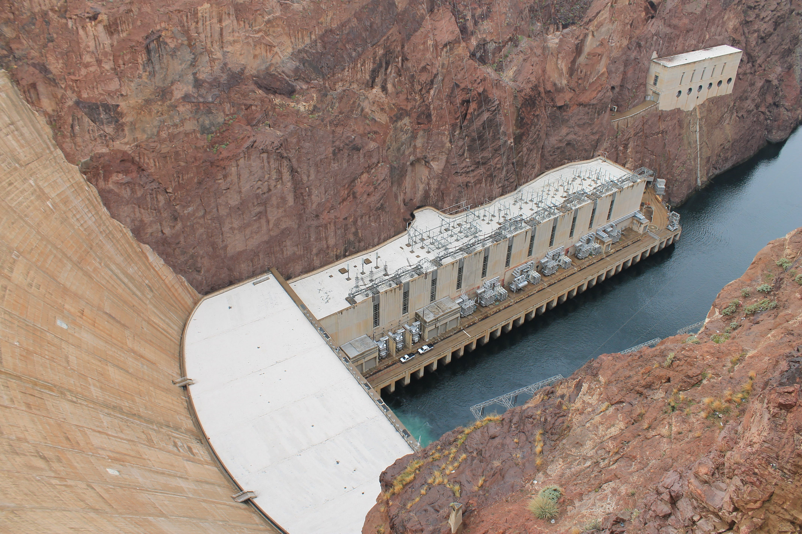
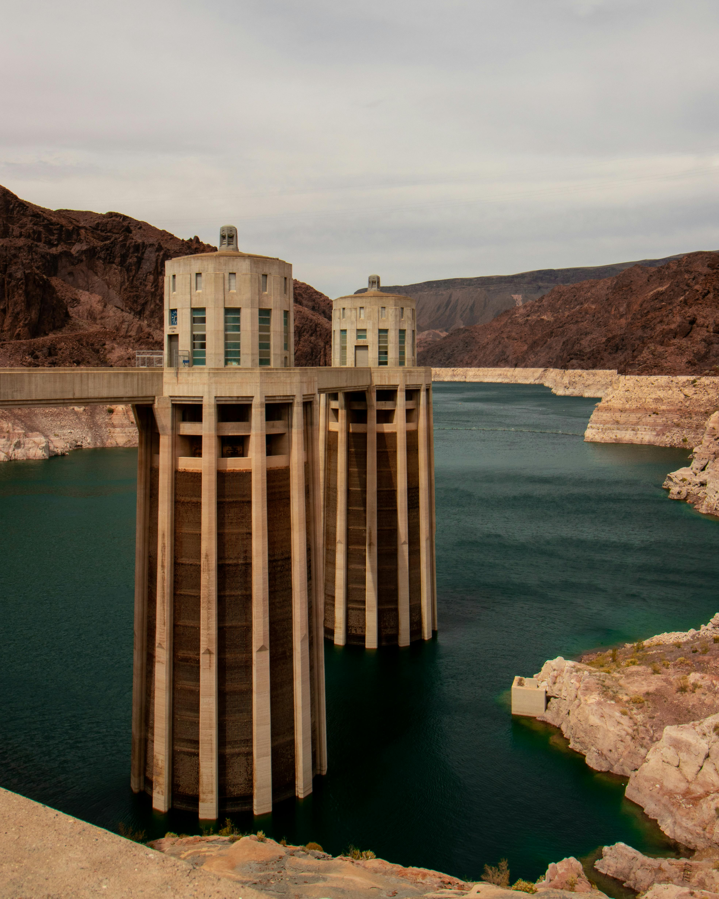
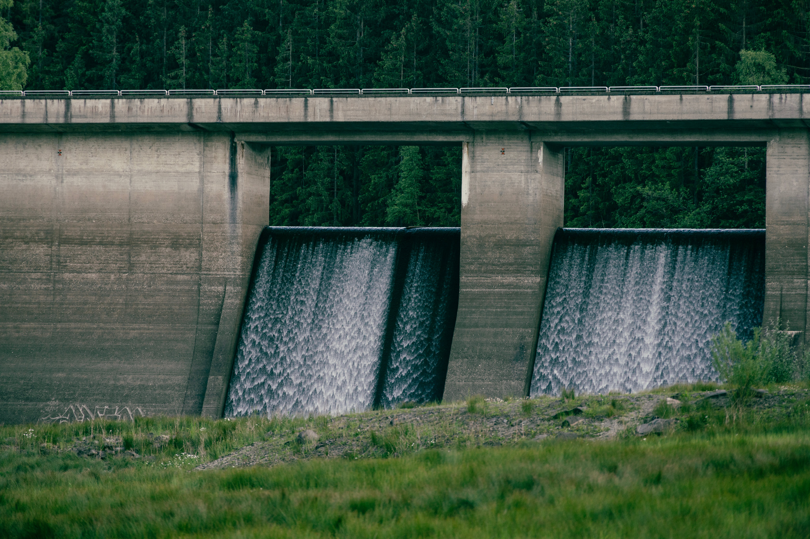
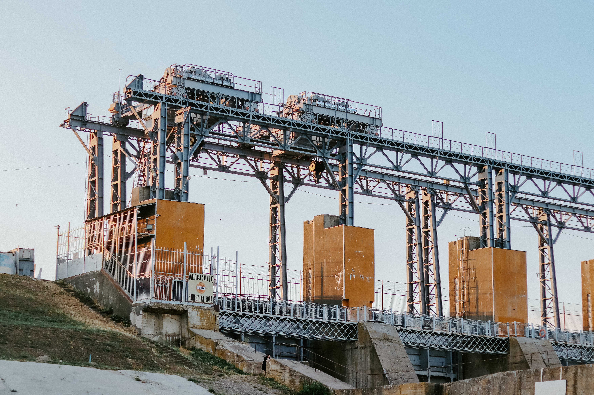

Energiei hidroelectrice îi stă la bază ciclul natural al apei, care este un proces regenerabil. Ciclul hidrologic implică evaporarea apei din oceane și râuri, formarea norilor, precipitații sub formă de ploaie sau zăpadă, și scurgerea înapoi în râuri și oceane. Acest ciclu continuu permite generarea constantă a energiei hidroelectrice.
Centralele hidroelectrice au o durată de viață lungă și necesită doar întreținere periodică. Aceasta face ca investiția în astfel de proiecte să fie una stabilă și pe termen lung.